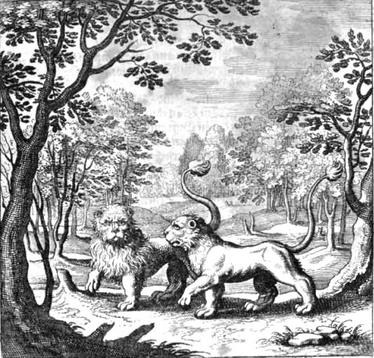
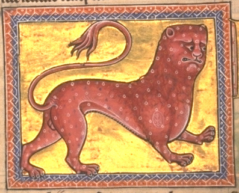
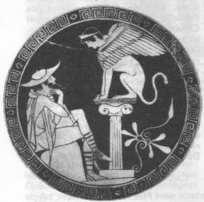

Emblema XVI.
revu le 5 mai 2002
Hic leo, quas plumas non habet, alter habet.
(Les plumes dont l’un de ces Lions est dépourvu, l’autre les possède1.)
Vainqueur des quadrupèdes, le Lion, cœur et griffe puissants,
Sait combattre sans peur et déguiser sa fuite.
Tu placeras sous lui une Lionne ailée
Qui vole, et dans son vol veut emporter le mâle.
Mais lui se tient à terre immobile et l’arrête.
Par cette image, apprends le chemin de nature2.
Le Lion, comme le fait connaître l’expérience, surpasse les autres animaux, non seulement par sa taille et sa vigueur corporelle, mais, plus encore, par sa générosité. Si, au cours d’une chasse, il est aperçu, il rougit de tourner le dos et recule peu à peu lorsqu’il est accablé par le nombre. Mais une fois hors de la vue des chasseurs, il prend rapidement la fuite, estimant que d’être caché le préserve de la honte. Il s’abstient de Lundi en fuyant, mais non quand il poursuit une proie. Ses os sont solides et bien loin d’être vides. On les dit si durs que, lorsqu’on les heurte, ils produisent du feu, comme l’acier et le silex3. Il redoute par-dessus tout le feu. Il paraît tirer sa substance de la nature du soleil. Par son impétuosité et sa chaleur il l’emporte sur tous les autres animaux, comme le soleil l’emporte sur les astres4. En outre ses yeux apparaissent toujours enflammés et largement ouverts, comme le soleil regarde la terre d’un œil largement ouvert et enflammé. La lionne combattant pour ses petits fixe les yeux à terre, pour ne pas s'effrayer à la vue des épieux. Lorsque le lion flaire l’adultère du léopard, il livre au supplice la lionne infidèle et s’élance de toutes ses forces pour se venger. C’est pourquoi la lionne lave dans un fleuve sa faute et l’odeur de celle-ci ou bien, se sentant coupable, elle accompagne son amant dans sa fuite5.
Les philosophes, contemplant la nature admirable de cet animal, ont présenté diverses allégories, qui sont comme des écritures hiéroglyphiques attestant leur œuvre secrète. Ayant constaté que le lion est un animal constant, ferme, sans ruse ni soupçons, ils lui ont assimilé la partie la plus noble de leur composition philosophique. Comme lui, elle ne fuit pas. Les os du lion sont solides. De même elle est fixe et ne connaît pas la défaite. De même que la lionne n’est pas toujours libre et à l’abri du reproche d’adultère, la Lune ou Mercure n’est pas exempte de toute tache, mais elle est unie par les ignorants tantôt à telle matière, tantôt à telle autre, et ce qui est ainsi réalisé est une union adultère entre des matières de nature discordante plutôt qu’un véritable mariage. Les petits du léopard et de la lionne ne possèdent pas de belles crinières autour du col et des épaules ; cette parure est réservée aux enfants qui ont été conçus du lion. Que l’on unisse donc la lionne philosophique à son époux légitime, et il naîtra un lionceau authentique et généreux que l’on reconnaîtra facilement à la griffe6. On ne doit pas prendre n’importe quelle lionne, mais une lionne ailée capable d’engager le combat avec le lion, confiante en l’agilité de ses plumes : elle peut ainsi éviter d’être anéantie par l’excessive colère du mâle et, dans le cas où il entrerait en fureur sans motif, projeter de fuir. En effet pendant qu’il s’efforce de la retenir alors qu’elle veut s’enfuir, il s’éprend à son égard d’un amour plus vif, l’amitié succédant à la querelle.
Mais, dira-t-on, qui a jamais vu une lionne ailée, et de quelle utilité les plumes auront-elles pu être pour une lionne ? Près du mont Cythéron est une vallée profonde dans laquelle on ne voit que des lionnes ailées7. Au sommet de la même montagne habite un lion rouge de la même espèce que le lion tué par Hercule. Il faut donc capturer ce lion, le conduire dans la vallée, et là il s’unira bientôt à la lionne. Celle-ci de son côté se laissera vaincre facilement comme l’égale par son égal. Ensuite il faudra les élever tous deux de cette vallée au sommet de la montagne, et dès lors ils ne se fuiront plus jamais mutuellement, mais demeureront toujours unis ensemble par un pacte inviolable. La capture des lions n’est pas aisée, je l’avoue ; elle est entourée de nombreux périls ; il faudra cependant l’entreprendre. Le lion ne prend pas sa nourriture avec la lionne, mais il erre à part, assure-t-on. C’est pourquoi ils doivent être recherchés et chassés séparément8. Mais si l’on se procure des petits lionceaux au moment où ils commencent a pousser leurs griffes, c’est-à-dire deux mois après leur naissance, et qu’on les unit lorsqu’ils sont devenus adultes, comme nous l’avons dit, la chose sera exempte de tout péril. Ils naissent à la saison du printemps, chose que l’on doit observer, et les yeux ouverts9. Comme, après la naissance, les lions suivent pour entrer un chemin oblique, afin d’éviter que l’on ne découvre leur couche, on devra les rechercher et enlever leurs petits avec le maximum de précaution et de soin10.
Notes1. Ce chapitre est difficile. Maier étudie l'un des symboles les plus connus et les plus utilisés du bestiaire alchimique : le lion. Surnommé le roi des animaux, le lion se signale par sa majesté, sa voracité et l'emprise irréfragable qu'il exerce en général sur ses proies. La difficulté vient aussi de ce que Maier veut nous parler du fixe et du volatil. C'est vouloir essayer de faire un compendium de l'alchimie en quelques phrases. Peu d'auteurs se sont hissés jusqu'à cette prouesse : Pontanus [Epître] et Lavinius ont, d'après Fulcanelli, réussi à résumer l'arcane en quinze lignes. Nous renvoyons à plusieurs pages de ce site où nous discutons de façon approfondie de ce symbolisme, en particulier aux Principes. Quantité de luttes d'animaux dont l'un possède des ailes et l'autre est aptère ont été à l'origine de nombre d'allégories. Curieusement, Lambsprinck, dans son De Lapide Philosophorum, montre

FIGURE I
(De Lapide, emblème n°3)une gravure où figurent deux lions : l'un est mâle, à la large crinière, et l'autre femelle, sans crinière. Il n'a pas individualisé le caractère fixe et volatile de l'animal, contrairement à Maier qui, au lieu d'ailleurs, de parler de volatile en vient à parler dans la suite de « volage » pour signifier sans doute l'inconstance du Mercure...
2. Image déjà vue cent fois. L'opération consiste à fixer le volatil, ou si l'on nous entend mieux, à congeler le visqueux. L'artiste doit découvrir le secret qui lui permettra de congeler une substance à une température excédant 500°C...L'image du lion est naturelle parce que le temps du Lion est avant tout celui de l'incendie, du feu. Cet animal ardent, sauvage, cruel et indompté trouve sa correspondance hermétique lors de la préparation du premier Mercure, comparé à Ajax ou au Lion vert. C'est ce lion de Némée qu'Hercule [notre artiste] doit combattre [Fontenay] dans son Ier Travail. Cette opération est capitale parce que le Lion vert contient en lui l'Esprit à l'état latent. Sur le Lion de Némée, cf. la porte alchimique de Metz.
3. pour le silex, cf. Atalanta, IV, XV ; Mercure de Nature ; Gardes du Corps - La fuite est l'attribut du Mercure qui est à la fois furtif et fugitif.
4. Ici, c'est le second aspect du roi des animaux qui est évoqué, sous l'espèce du Lion rouge. C'est pourquoi Maier nous parle du soleil et du feu que craint le Lion vert. Car ce dernier, par le feu, perd de sa superbe et ne peut plus fuir. Il est remarquable que cette chasse au Lion vert [allusion aux Fondements de l'Alchimie de Newton de B.J. Dobbs] ne requiert nulle autre arme qu'un glaive de feu [Atalanta, VIII, XIV]. Un Adepte a consacré un ouvrage au Lion pris dans sa symbolique hermétique, Jacques Le Tesson, dans l'Oeuvre du Lion Verd. Le traité commence, comme d'habitude, par une promenade au cours de laquelle le héros, alors que son chemin le mène près d'une montagne, découvre une caverne qui le conduit dans un antre où gît le « Lyon verd ». Ce Lion s'adresse au Wanderer en lui disant qu'il réduit les corps en sa propre matière, c'est-à-dire en eau mercurielle. Il lui explique qu'il lui faudra d'abord le purifier, puis le tuer pour le ressusciter. C'est l'habituelle allégorie de la crucifixion par trois pointes de fer, suivie du dépeçage du corps [démembrement d'Osiris, etc.] et de la réincrudation des corps. Ce Lion est de vertu céleste [rapport à la rosée de mai] et sa manifestation spirituelle ne s'opère que la nuit, sous un ciel sans nuage et dans un près. Le lion [ou Matière] enseigne au Wanderer qu'il faut ensuite le mettre en une chambre ronde et claire où l'on puisse le voir : c'est indiquer la nature du vase, qui doit être de verre [mais ce n'est pas le verre naturel...]. Ce vase doit être porté à un certain degré de chaleur [c'est l'un des secrets les mieux gardés] qui doit tenir de la sous-fusion [cf. Mercure]. Trois obstacles peuvent entraver la marche de l'oeuvre, symbolisés par Héphaïstos, Neptune et Arès. Seule une torche pourra éclairer l'impétrant et l'empécher de choir dans l'abîme...Les deux premiers dieux cités ne posent pas de problème et ils sont complémentaires : le FEU et l'EAU. Quant à Arès, le « dieu d'impatience », on devra se rappeler que Les Aloades le retinrent en prison dans un vase d'airain pendant de longues années, tandis que les dieux, ses frères, prirent plaisir à l'humilier en se réunissant en tribunal pour le juger d'un meurtre...

FIGURE II
(le Rosaire des Philosophes, XVIe siècle : le Lion Vert devenant Rouge par infusion du Soufre solaire)5. Il y a là des points de science qu'on chercherait en vain dans d'autres textes. Par exemple, pourquoi le lion des alchimistes dort-il les yeux ouverts ? La symbolique chrétienne nous apprend à cet égard que le lion représente le Christ. Il est d'abord vigilant ; il efface ses traces sur le sable et déroute ainsi le chasseur [l'alchimiste] : il est donc sage. Enfin, Les petits lionceaux, à leur naissance, ne donnent aucun signe de vie; c'est leur père qui, au bout de trois jours, les rappelle à la vie en leur soufflant dessus. Cette légende rappelle la résurrection de Jésus, sorti, dit l'évangile, du tombeau trois jours après sa mort. Le lion contracte d'étroits rapports avec l'aigle : cette lionne qu'évoque Maier possède des ailes d'aigle. Voici à présent le léopard, autre symbole complexe. Le léopard est le symbole de la Grèce et a quatre têtes. Mais il y a plus : on a donné à cet animal outre quatre têtes, quatre ailes, ce qui en fait l'animal le plus véloce du bestiaire hermétique. Dans sa vision apocalyptique, Daniel aperçoit :
« quatre bêtes énormes sortant de la mer, toutes différentes entre elles...l'une d'elles pareille à un léopard, portait sur les flancs quatre ailes d'oiseaux ; elle avait quatre têtes et la puissance lui fut donnée »

FIGURE III
(léopard hermétique)Le léopard ou panthera pardus est un animal que nous avons déjà vu à la section des blasons alchimiques. Il semble que le léopard manifeste une nature lunaire, en conformité d'ailleurs avec le rapport à la lionne, comme nous venons de le voir ; il y a là une indication. D'un côté, la lionne et le léopard, c'est-à-dire l'un des principes mercuriels et le Sel. De l'autre côté l'autre principe mercuriel, l'essentiel, qui porte en lui le Soufre rouge.
6. Maier veut parler du griffon : la partie supérieure de son corps est celle d'un aigle et la partie inférieure, celle d'un lion. Le griffon, par l'intermédiaire de ces patts arrières contracte également des rapports avec le dragon. Notez aussi que tant le lion, que le coq ou le héron, ainsi que le griffon expriment la vigilance. Quant à la griffe, onux, elle peut renvoyer à l'onyx, pierre précieuse ou à un coquillage rosé [mérelle et soufre, par cabale].
7. Il y a là une allusion à Aphrodite : Cythéron renvoie à Kuqhreia, déesse de Cythère, épithète d'Aphrodite. Le sens général de la phrase est une opération par laquelle on prépare un sel en rapport avec cette déesse, c'est-à-dire par cabale, le salpêtre [en sachant que ce sel - almh - vaut aussi pour désigner la mer ou toute efflorescence saline]. Evidemment, on peut trouver un sens immédiat à cette montagne si l'on se rappelle l'histoire d'Hercule :Héraclès tua le lion qui vivait sur le mont Cithéron et qui, depuis sa tanière, s'avançait jusqu'aux pâturages, ravageant le bétail d'Amphitryon et de Thespios, le roi de Thespies. Héraclès, ayant pris la décision de tuer ce lion, se rendit chez Thespios. Le roi lui accorda l'hospitalité pendant cinquante jours. Et chaque nuit, avant que le jeune homme ne parte à la chasse, il le faisait dormir avec l'une de ses filles (Thespios, de fait, avait eu cinquante filles de sa femme Mégamède, la fille d'Arné), car il voulait à tout prix que chacune d'elles mette au monde un enfant d'Héraclès. Le jeune homme s'imaginait qu'il couchait toujours avec la même, mais il s'unit aux cinquante sœurs. Ainsi Héraclès tua-t-il le lion et il endossa sa peau, et la gueule grand ouverte du fauve lui servit de casque. [Apollodore, II, 4,10]Le mont Cythéron [Cithéron] est en fait une chaine de montagnes qui sépare la Béotie de la Migaride et de l’Attique, sujet d’une légende qui nous occupe. Cithéron, un roi de Platée, donna son nom à la montagne voisine. Mais Cithéron passait pour être un beau jeune homme qui avait dédaigné l’amour de Tisiphone, l’une des trois Érinyes [Fontenay]. Un des cheveux de cette dernière se transforma en un serpent qui le piqua mortellement au pied de la montagne qui porte désormais son nom. Mais le symbolisme du mont Cithéron se révèle encoreplus riche, puisque lieu à la fois désert et de vie [on y mène paître les troupeaux] donc de rencontre. C'est là qu'Oedipe est abandonné et c'est là qu'il se condamne à la solitude. Lorsqu'on connaît le mythe d'Oedipe, il est impossible de ne pas y retrouver un rapport au Grand oeuvre. On sait que le roi de Thèbes, Laïos, inquiet de ne pas avoir d'héritier, alla consulter l'oracle de Delphes. Celui-ci prédit que le fils qui lui naîtrait tuerait son père et épouserait sa mère. Eh bien ! Le 3ème oeuvre est exactement figuré ainsi : le Mercurius senex est promis à disparaître, destiné à être remplacé par le BasileuV. Dans cette opération, la Lune hermétique [qui est le sel des Sages ou corps de la Pierre] s'unit à la partie mâle du BasileuV, c'est-à-dire le Soufre rouge. Ainsi existe-il un rapport de cabale, étroit, entre Oedipe et le principe Soufre. De même qu'entre la légende du Sphinx et d'Oedipe. Qu'on en juge sur le poème de José Maria De Heredia (1842-1905) :
Sphinx
Au flanc du Cithéron, sous la ronce enfoui,
Le roc s'ouvre, repaire où resplendit au centre
Par l'éclat des yeux d'or, de la gorge et du ventre,
La vierge aux ailes d'aigle et dont nul n'a joui.Et l'Homme s'arrêta sur le seuil, ébloui.
Quelle est l'ombre qui rend plus sombre encor mon antre ?
L'Amour. Es-tu le Dieu ? Je suis le Héros. Entre ;
Mais tu cherches la mort. L'oses-tu braver ? Oui.Bellérophon dompta la Chimére farouche.
N'approche pas. - Ma lèvre a fait frémir ta bouche ...
Viens donc ! Entre mes bras tes os vont se briser ;Mes ongles dans ta chair ... Qu'importe le supplice,
Si j'ai conquis la gloire et ravi le baiser ?
Tu triomphes en vain, car tu meurs. O délice ! ...Ce triomphe de Bellérophon sur la Chimère est semblable à la victoire d'Oedipe sur le Sphinx. Simplement, l'énigmatique question posée par le monstre a un côté nettement plus spirituel qui la rapproche évidemment de l'hermétisme traditionnel.

FIGURE IV
(Tasse attique, musée du Vatican)Oedipe est représenté habituellement en simple voyageur [Wanderer], muni, à l'instar du pélerin de Compostelle, de son bâton, de sandales, d'un chapeau et d'une tunique. Oedipe est assis sur une pierre et le Sphinx est juché, en face de lui, sur un temple monolithe [voir Zozime]. Le Sphinx a bien les traits que Maier prête au résultat de la parturition entre le lion aptère et la lionne ailée : un coprs de lion, des ailes d'aigle et une tête féminine. On peut relever tout un rapport entrelacé entre les légendes de Thésée, d'Héraclès, d'Oedipe et des Argonautes.
8. Nous dirions volontiers que la lionne ailée à tête de femme serait à rechercher du côté de la Gorgone et de Méduse. Et que la chute du Sphinx équivaut à la décapitation de Méduse. Voyez la section Gardes du corps où nous évoquons l'arcane. Quant au lion, partie mâle de la pierre, voyez la section Soufre et Fontenay pour voir sous quelle forme substancielle on le tire des cavernes et sous quelle forme élémentaire il faut l'apprêter, pour le conjoindre à la lionne.
9. Il s'agit de l'embryon hermétique : ses yeux ouverts sont une indication sur le sexe. C'est le Soufre rouge en cours de réincrudation. Le printemps est une autre indication pour désigner le mois de mars et d'avril, quand le Soleil est dans le signe zodiacal du Bélier [nous voulons parler du zodiaque tropical, bien entendu]. Sur le Bélier, cf. Atalanta, L et le zodiaque alchimique.
10. C'est-à-dire que l'on devra utiliser le Mercure avec discernement : il faudra être perspicace [agcinooV], c'est-à-dire avoir l'esprit vif...